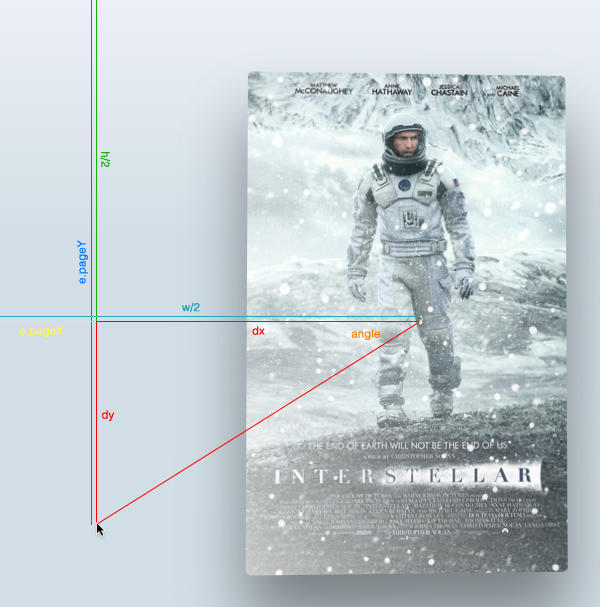

Hello World
CodeTengu Weekly 碼天狗週刊
本期 curators：
- @tzangms - Oceanic / 人生海海 - 我愛姜藝彬
- @fukuball - ImFukuball - 坦然一個人吃燒肉、逛超市的真大叔
- @adamp33 - 看棒球才是正職，副業是前端工程師
 @tzangms
@tzangms
What makes a great product manager? - 怎樣才算是好的 PM?
這幾年一直半兼著 PM 的角色, 覺得自己做的不是很好, 不過一直往這類議題努力學習, 也由於沒擔任過全職的 PM, 總覺得對於 PM 確切工作內容的理解還是有些不完整, 看完這篇後, 方向就清楚多了。 以下做幾點心得摘要:
態度、高 EQ
對產品的理解
PM 要對產品有足夠的理解, 可以想像使用者的情境並從中找出使用者最簡單且最有效的需求, 同時得從從各種來源的資料、想法跟意見來支持開發決策, 並且符合使用者的需求。
- 專案執行
Get shit done!
- 不只是溝通
除了清楚的溝通之外, 也得確保大家有共同的目標, 以及對產品決策有共同的認知。
- 領導力
PM 需要在沒有任何實質權力的狀況下帶領團隊。 除了上述的幾點之外, PM 還需要會訂定出可以啟發、激勵團隊的產品遠景跟策略, 制定清楚的目標以及路線, 還得展現誠實跟負責任的態度, 來贏得團隊的信任。
44 engineering management lessons
這篇是從工程師升級到管理職所學習到的一些事情, 我從事管理職也幾年了, 以前也總是免不了手癢自己跳下去寫程式, 這兩年才算是真的脫離寫程式的狀態, 專心的做該做的事, 當然也沒有人轉職就可以馬上改變就是了 (笑)
以前看了很多相關文章跟書, 但是沒有真的親身走過一段, 是不會有真的體會的, 獻給自己還有剛轉職或是還在徬徨的主管們。 特別是文章開頭的 Do and Don't 這兩段。
Reaching and re-engaging users on the mobile web
雖然說現在是 Mobile app 的時代, 但是前一陣子在 Android 手機上用 Chrome 瀏覽 m.facebook.com 的時候, 居然提示問說要不要收到 push notification, 後續還真的收到了通知, 一整個覺得不得了了。
看到這篇, 才發現還有許多不得了的功能, 除了通知之外, 也可以提示加入到桌面, 還有一些相機、geolocation 等功能可以直接在 web 上面實作。
免不了有點期待, Web 終於可以從 Mobile app 手中奪回一些份量了嗎?
[React.js] Container Components
這篇介紹用在 React.js 上的 Container 概念, 用來達到 Component reuse, 主要是把資料擷取跟 UI 呈現切開, 這樣 Component 就可以 reuse 啦。
 @fukuball
@fukuball
林軒田教授機器學習基石 Machine Learning Foundations 第四講學習筆記
第四講的內容主要是讓我們知道機器學習是否真的可能，並利用數學上的定理來說明機器學習在某些情境之下是可能的，有數學上定理的支持，我們就可以放心的利用機器學習來解決我們所面對的一些問題，否則如果機器學習是不可能做到的話，那我們還學機器學習做什麼！包袱收一收，乾脆去賣雞排比較快啊！
Doing Data Science at Twitter - Twitter 資料科學家 Robert Chang 的告白
美國杜克大學經濟學教授 Dan Ariely 曾經說過：
Big data is like teenage sex: everyone talks about it, nobody really knows how to do it, everyone thinks everyone else is doing it, so everyone claims they are doing it.
本篇文章美籍台裔 Twitter 資料科學家 Robert Chang 寫下了他這兩年在 Twitter 如何去做所謂的 Data Science，以及他認為什麼是 Data Science，有心做相關領域功能的碼農們值得看看本篇文章！
Why Microframeworks Lead to Lean Applications - 使用 Microframeworks 來打造精簡的應用程式
有時各位 PHP 碼農們只想要做一個簡單的應用程式，如果這時使用 Zend Framework 或是其他功能多又肥的 Framework，似乎或有種殺雞用牛刀的感覺。本篇文章說明如何使用 SlimPHP 等有符合 MicroPHP 宣言的 microframeworks 來打造精簡的應用程式。
First Look at Yahoo’s MySQL Performance Analyzer - Yahoo’s MySQL Performance Analyzer 初體驗
當各位碼農將開發好的產品發佈上線之後，當資料慢慢增加也會慢慢會遇到一些資料庫效能上的問題。這時可以使用一些工具來檢測這些問題，像是 MysqlTuner、 Percona 等等，本篇文章要介紹的是使用 Yahoo MySql performance analyser 來檢測資料庫效能問題，Yahoo MySql performance analyser 同時也是一個 Open Source 的 Project，有興趣可以前往 GitHub 參閱。
Maintainable database code - 可維護資料庫相關程式碼的一些觀點
一個網頁應用程式幾乎一定會用到資料庫，當應用程式越大，資料庫相關的程式碼也會越多，這時如何維護資料庫相關程式碼也是一個大問題。本篇文章提到了幾個重要的觀點，可以讓資料庫相關程式碼變得容易維護，目前大部份好用的 Framework 也都遵循這樣的概念，值得一看。
@adamp33
沈寂兩年半的 Modernizr 終於推出 3.0 版！
作為一個夠格的前端工程師，不能再用瀏覽器版本當作 fallback 的判斷標準，而是用功能支援（feature support）的思維來實作，這時候老牌的 Modernizr 就是你最好的朋友。
新版 Modernizr 新增 99 項新功能，以下節錄幾個比較實用的功能：
- 加入 ES5 和 ES6 的新語法支援判斷。
- 由於瀏覽器實作
display:flex的程度不一，有支援也未必一致，Modernizr 也提供了flexwrap和flexboxtweener來判斷。 - 增加了 CSS 的高度（如 vh）、寬度（如 vw） 的支援判斷。
- 增加了 CSS 偽元素支援
transition和animation的判斷。
其實在 CSS 的 feature detection 已經有原生的使用方法，在 CSS 和 JavaScript 中都可以判斷，不過目前 IE 仍不支援這樣的做法。
requestIdleCallback API 即將問世
由 JavaScript 的 UI thread 是 single tread，導致處理 UI 時總是會有效能上的問題，除了漸漸流行開來的 requestAnimationFrame 可以在瀏覽器準備好繪製下一個 frame 時才執行 callback，減少動畫、滾動時不順暢的情況，但當 JavaScript 執行時間大於約 16ms 時，仍會影響下一個動畫格，造成畫面略微停頓的情況。
有了 requestIdleCallback 可以確保瀏覽器有資源來處理，用於延遲較為不重要的函式。例如載入第一屏畫面時，可以延遲執行和第一屏畫面不相關的功能（e.g. 分析用的數據上傳），以往都只能用 setTimeout 或是 Promise 的方式執行，但仍舊無法確定瀏覽器執行函式的最佳時機點，現在有了 requestIdleCallback 就可以做到。
可惜的是，這還在很初步階段，只有在 Chrome Canaray 才有支援，還必須打開 flag。（chrome://flags/#enable-experimental-web-platform-features ）

Apple TV 的視差滾動效果（Parallax）實作教學
Apple TV 的視差滾動效果相當吸睛，有神人用 CSS 的 transform3d 和 mousemove 事件搭配，做出了類似的效果，並將寫成一篇教學，不妨玩玩看。
CSS triggers 之外，現在也有 JavaScript triggers？
Google Chrome 團隊的大神 Paul Irish 最近整理出一份 JavaScript 操作中，會產生 reflow 的情況，像是讀取 el.scrollTop、el.getBoundingClientRect() 都會使得頁面重新排版（layout），對於在手機上 DOM 元素較多、頁面較長的時候，會有效能上的問題，例如捲動（scroll）不流暢等等。
先前另一位 Paul（Paul Lewis）也有整理一版 CSS triggers 是 CSS 各項 property 的整理，是相當實用的參考。
網頁速度如何影響使用者經驗、營收和成本
除了眾所皆知的「Amazon 網站慢 1 秒營收掉 1%」的傳說之外，這篇超詳細的文章有更多例子來支持網頁速度、效能是值得投資時間去做的，像是「5 秒內未能載入完成，將會有 74% 的使用者選擇離開」、「歐巴馬競選網站載入時間由 5 秒縮短成 2 秒，增加了 3400 萬的募款」...等等。
內容深入淺出，適合當作教育客戶和使用者經驗團隊的材料。